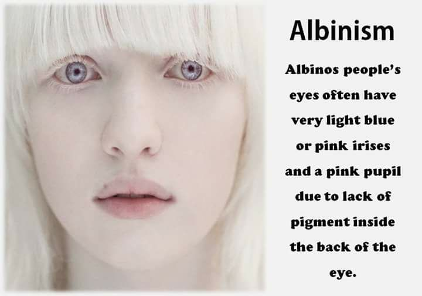
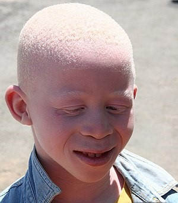

Genetica umană
Albinism
Albinismul rezultă prin moștenire genetică a genelor recesive. Oamenii cu pigmentare redusă au pielea, părul și ochii foarte deschise la culoare. Acești oameni trebuie să evite expunerea îndelungată la razele solare, să folosească permanent creme puternice de protecție solară, ochelari care să le apere ochii și haine cu mâneci lungi. Toate formele de albinism cauzează probleme ale dezvoltării și funcționării ochilor:


- strabism
- fotofobie
- mișcări rapide si involuntare ale ochilor
- diferite deficiențe de vedere (de exemplu miopie sau hipermetropie avansată, astigmatism, putându-se ajunge chiar până la orbire)